Session 23 · Book section 4.5
🕸️
A seismic network is a set of stations at irregular places, and some of them miss every earthquake.
How does a network learn from neighboring stations, and does it predict shaking at a silent station better than interpolation?
Reading: 4.5 Graph networks · training and evaluating any network: lecture 24a
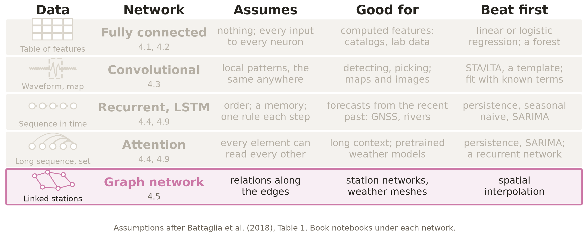
A station network has no grid and no order: stations are nodes, nearby stations are joined by edges, and the same weights apply at every station.
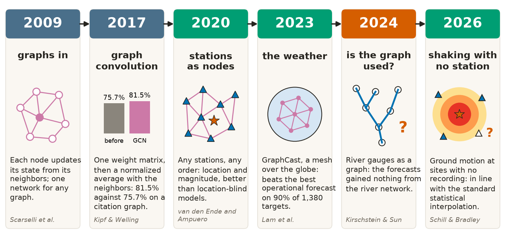
Neighbors pass messages, stations become nodes, the globe a mesh; then check that the graph helps, and run the baseline.
Scarselli et al. (2009) IEEE Trans. Neural Netw. 20, 61–80 · Kipf & Welling (2017) ICLR, arXiv:1609.02907 (2016) · van den Ende & Ampuero (2020) Geophys. Res. Lett. 47, e2020GL088690 · Lam et al. (2023) Science 382, 1416–1421 · Kirschstein & Sun (2024) ICML, PMLR 235, 24713–24725 · Schill & Bradley (2026) Earthquake Spectra 42, e70094. Icons drawn.
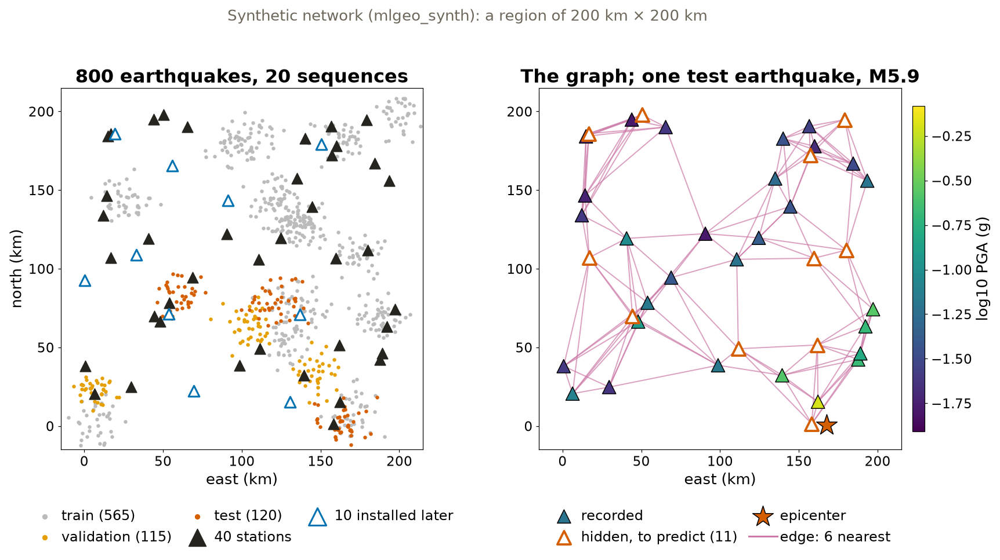
Node: a station. Edge: one station is among the other’s 6 nearest. The question: log10 PGA at the 8 to 12 hidden stations, from the stations that recorded.
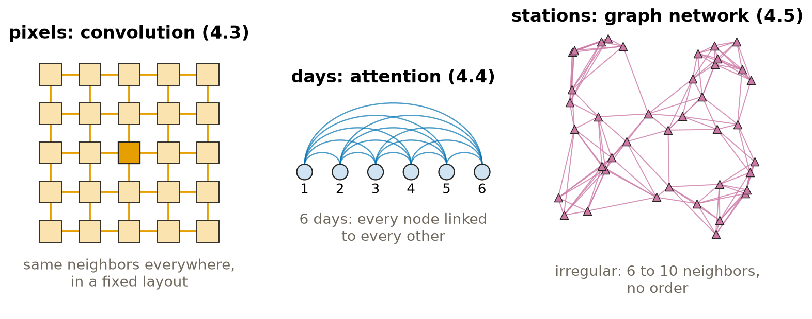
A convolution is a graph network on a grid of pixels; attention is a graph network in which every node is linked to every other. Stations need the general case.
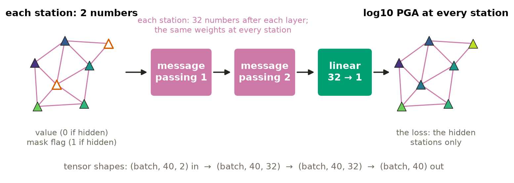
Each station enters with 2 numbers, its value and a mask flag; two message-passing layers give it 32; one linear head, the same at every station, gives its log10 PGA.
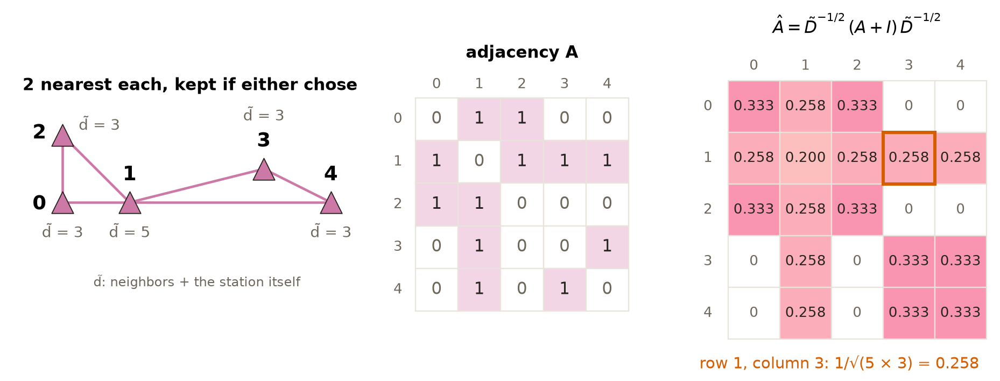
Each station picks its 2 nearest; an edge is kept if either picked it, and each station keeps itself. Station 1 has degree 5 with itself, so its weight for station 3 is 1/√(5 × 3) = 0.258.
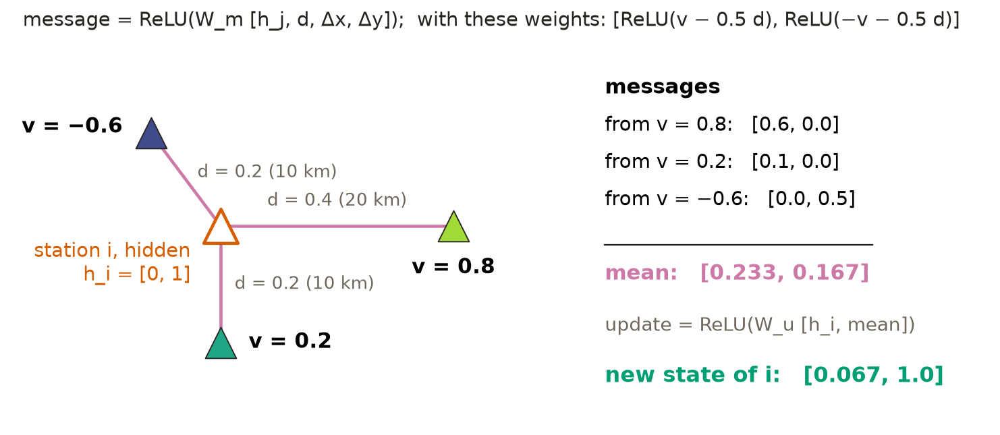
Three messages, [0.6, 0], [0.1, 0] and [0, 0.5]; their mean [0.233, 0.167]; the update gives the hidden station the state [0.067, 1.0].
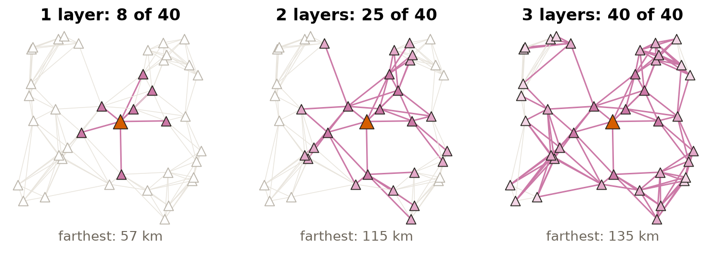
Each layer adds one ring of neighbors: on average 8, 16 and 27 of the 40 stations after 1, 2 and 3 layers. The notebook uses 2.
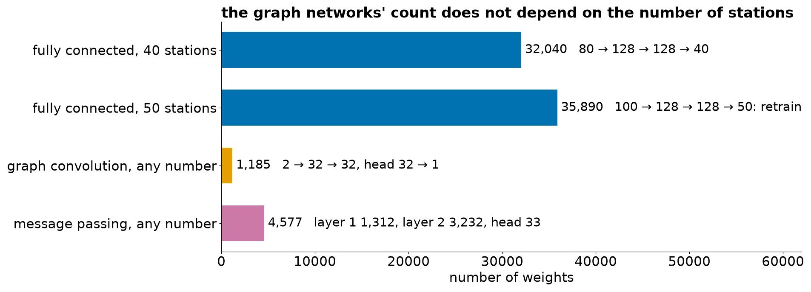
Fully connected: 32,040 weights for 40 stations, 35,890 for 50, and a new training. Graph convolution 1,185 and message passing 4,577, for any number of stations.
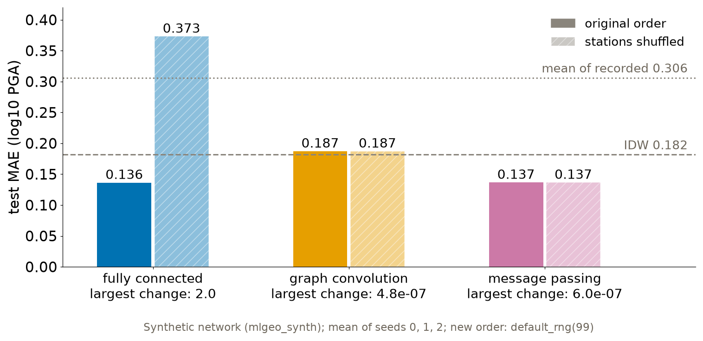
Reorder the station list: the fully connected network goes from 0.136 to 0.373, worse than the mean of recorded stations. The graph networks change by less than 1e-6.
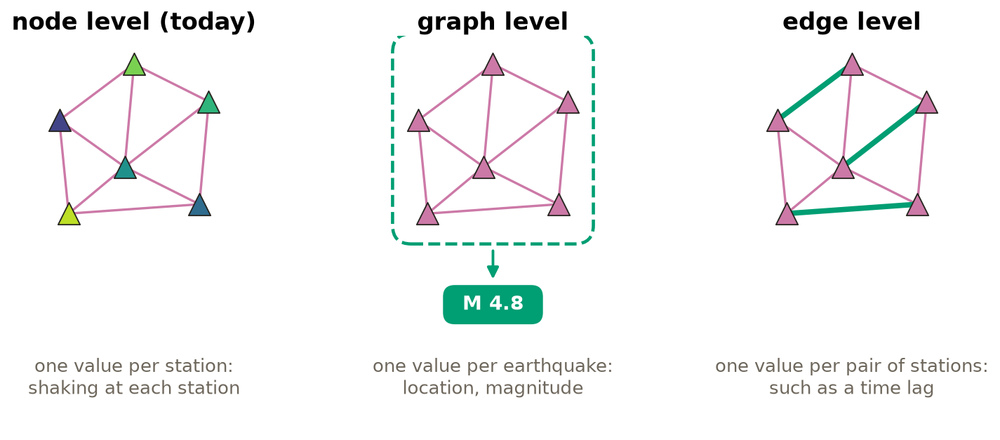
Node level: shaking at each station (today). Graph level: one value per earthquake, as van den Ende & Ampuero (2020) estimated location and magnitude. Edge level: one per station pair.
| Model | Weights | Test error, log10 PGA | Training (s) |
|---|---|---|---|
| floor 2: noise only | 0.080 | ||
| fully connected | 32,040 | 0.136 ± 0.001 | 1.3 |
| message passing | 4,577 | 0.137 ± 0.005 | 28 |
| floor 1: station term + noise | 0.138 | ||
| IDW (interpolation) | 0 | 0.182 | 0 |
| graph convolution | 1,185 | 0.187 ± 0.000 | 2.8 |
| mean of recorded stations | 0 | 0.306 | 0 |
Message passing ties the fully connected network, and both beat IDW by 25% by learning the station terms. The graph convolution only smooths, like IDW.
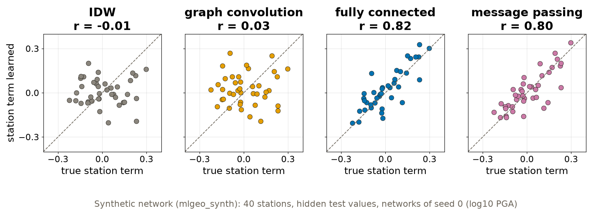
Station terms learned (seed 0) at r = 0.82 (fully connected) and 0.80 (message passing). IDW and the graph convolution learn none: r = −0.01 and 0.03.
| Method | 10 new stations | Hidden old stations |
|---|---|---|
| floor 1: station term + noise | 0.193 | |
| graph convolution | 0.199 ± 0.000 | 0.188 ± 0.001 |
| IDW (interpolation) | 0.200 | 0.182 |
| message passing | 0.233 ± 0.008 | 0.196 ± 0.020 |
| mean of recorded stations | 0.319 | 0.306 |
| fully connected | cannot run | cannot run |
The graph networks run on the grown network; the fully connected one cannot. At the new stations none beats IDW by a useful margin: a new station has no history.
| Step | Practice | Rubric |
|---|---|---|
| Graph | k nearest or a radius, from the correlation distance | C4.1 |
| Edges | distance and direction, with their scale | C4.2 |
| Split | sequences in time; stations held out | C4.3 |
| Baseline | IDW or kriging, same hidden stations | C4.4 |
| Test | shuffle the stations; grow the network | C4.5, E5 |
| Evaluate | error against distance to the source | C4.6 |
pixi run jupyter lab → mlgeo_4.5_GNN.ipynb, Your turn (1): the adjacency of five stationsPyTorch names: nn.Linear, A_hat @ h, h[:, src], S @ m; no graph library needed · the notebook runs in under 2 minutes on a laptop CPU · training block: lecture 24a
Graph networks: for stations at irregular places, in any number and order. Here message passing tied the fully connected network; at new stations nothing beat IDW by a useful margin.
ESS 469/569 · Machine Learning in the Geosciences · Autumn 2026